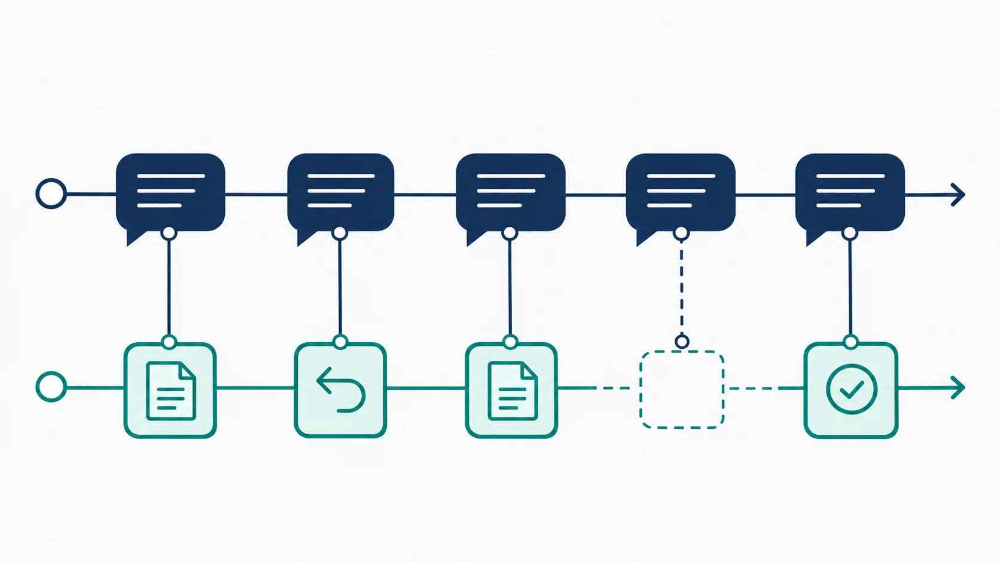

Article · 飞函
Article · 飞函
异常审批回溯：让聊天记录对上业务记录
一笔付款在审批系统里显示“已通过”，审计人员却在工作群里看到审批人曾说“先别付，金额还要核对”。两条记录看似冲突，真正需要查清的是：群里的话对应哪一张单、发生在审批操作之前还是之后、最终是谁依据什么完成了放行。
先固定业务记录，再寻找沟通证据
从异常付款单出发，记录审批实例编号、单据编号、版本、发起人、审批节点、操作人、操作时间和最终状态。若单据被撤回、修改后重提，每个实例和版本都应分别列出，避免把旧单的讨论接到新单的审批结果上。
随后按单号、项目名、金额和参与人查找相关聊天。找到消息后，保留其所在会话、发送人、发送时间及前后语境。单独截取一句“同意”无法说明它同意的是付款、金额调整，还是仅仅同意继续讨论。
用共同锚点建立对应关系
一条可复核的关联，至少要回答“同一事项、同一阶段、同一批人”三个问题：
| 核对项 | 聊天侧要看什么 | 业务侧要看什么 |
|---|---|---|
| 事项 | 单号、附件名称、金额或项目描述 | 单据编号、实例编号、单据版本 |
| 时间 | 消息发送时间与讨论顺序 | 提交、审批、退回、重提的操作时间 |
| 人员 | 发言人及其当时的职责 | 节点处理人、实际操作账号 |
| 决定 | 异议、补充材料、明确答复 | 审批意见、状态变化及操作日志 |
最好让发起人在沟通时直接带上单号，并把关键结论回填到审批单的意见或附件中。这样，聊天提供决策背景，业务系统保留正式操作；审计人员可以沿同一编号往返核对。

遇到对不上的记录，保留断点
如果群里说“暂缓”，系统随后却显示“通过”，不能用一句聊天推定审批无效，也不能只凭系统状态忽略异议。应继续检查是否出现修改重提、其他审批人接手、补充材料到达或事后补录，并记录每一步的时间和依据。
尤其要区分“沟通中的意向”和“系统中的授权操作”。口头同意若没有对应的审批节点记录，只能作为线索；系统操作若找不到相关说明，也应标为待解释的断点。遇到消息缺失、身份无法确认或时间口径不同，应明确写出证据范围，不补造一条完整链路。
让下一次回溯更省力
在使用飞函承接审批沟通的场景中，可以利用消息检索定位讨论，并结合消息审计能力核对沟通侧记录；审批实例、节点状态和操作日志仍应回到业务系统确认。具体可检索范围和审计权限，要以实际部署与配置为准。
流程上更关键的是统一关联字段：通知带单号，讨论引用单号，审批意见写明关键依据，异常处理留下补录原因。审计人员回溯时，就能从一张单据找到对应讨论，再从讨论返回具体审批节点，清楚指出已经证实的事实和仍需核查的断点。